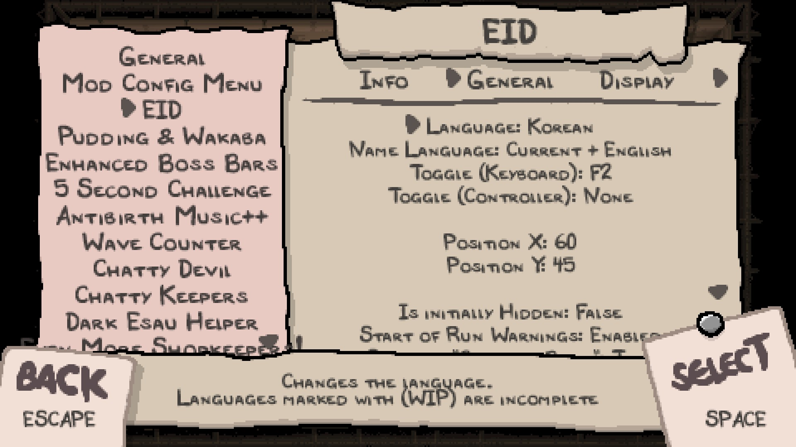
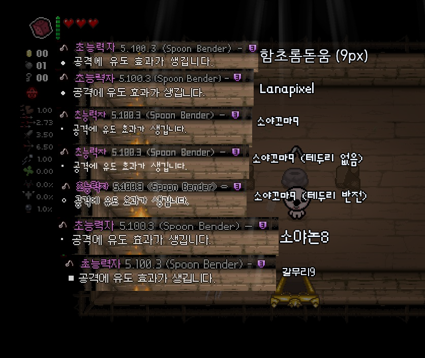

주요 옵션
Mod Config Menu는 기본적으로 라틴 계열의 문자만 지원하기 때문에 아쉽게도 한국어는 지원하지 않습니다. 이 페이지는 설명모드 세팅 방법을 모르는 사람들을 위한 페이지입니다.
Mod Config Menu의 기본적인 진입 방법은 L 키 혹은 F10 키입니다. 진입에 성공하면 아래와 비슷한 화면이 출력됩니다. 
언어 설정
EID -> General -> Language를 'Korean'으로 설정하면 이후 아이템 설명이 한국어로 표시됩니다.
기본 설정
EID -> General에서 기본 설정을 할 수 있습니다.
| 옵션 | 설명 | 기본값 |
|---|---|---|
| Language | ||
| Language | 언어를 설정합니다 | auto |
| Name Language | 아이템 이름 표시 언어를 설정합니다. - English : 영어만- Current : 현재 언어만- Current + English : 현재 언어 + 영어 |
Current |
| Keybinds | ||
| Toggle | 설명을 켜고 끌 수 있는 키보드 단축키를 설정합니다. | F2(키보드) |
| Advanced | ||
| Description Refresh Rate | 설명모드의 설명 새로고침 주기를 설정합니다. 숫자가 높을수록 설명모드가 더 빠르게 반응하나 게임 성능이 하락할 수 있습니다. |
30 |
| RESET CONFIG TO DEFAULT | 설명모드 설정을 초기화합니다. |
표시 설정
EID -> Display에서 표시할 설명의 유형을 설정할 수 있습니다.
| 옵션 | 설명 | 기본값 |
|---|---|---|
| Start of Run Warnings | 아이작의 번제 게임 시작 시 해금이 불가능하거나, 알트 카인 플레이 시 경고문을 출력합니다. | false |
| Gameplay | ||
| Hide in Battle | 방 안에 적이 있을 경우 설명을 자동으로 숨깁니다. | false |
| Is initially hidden | 아이작의 번제 게임 시작 시 설명 모드를 숨기게 합니다. | false |
| Max Distance | 아이템이 인식되는 범위를 설정합니다. | 5 |
| Multiple Descriptions | 인식 범위 안에 있는 모든 설명을 출력합니다. 주의: 설명이 정상적으로 출력되지 않거나 가려질 수 있습니다. |
false |
| Max Descriptions to Display | 출력되는 최대 설명의 개수를 설정합니다. (일부 상황에만 적용) | 99 |
| Description visibility | ||
| Show Item Info | 아이템의 설명을 보여줍니다. | true |
| Show Trinket Info | 장신구의 설명을 보여줍니다. | true |
| Show Card Info | 카드/룬/영혼석의 설명을 보여줍니다. | true |
| Show Pill Info | 알약의 설명을 보여줍니다. | true |
| Special rooms | ||
| Show Sacrifice Room Infos | 다음 희생방 희생 시 발생 효과를 보여줍니다. | true |
| Show Dice Room Infos | 현재 주사위방의 설명을 보여줍니다. | true |
| Show Sanguine Bond Infos | Sanguine Bond 가시가 생성된 악마방 진입 시 해당 가시의 확률표를 보여줍니다. | true |
| Show Predict Sanguine Bond Result | Sanguine Bond 가시가 생성된 악마방에서 다음 희생 시 예상 효과를 보여줍니다. | false |
| Items and Machines | ||
| Crane Game Infos | 크레인 게임에 있는 아이템의 설명을 보여줍니다. | true |
| Void Stat Increase Infos | Void 및 Black Rune 아이템 사용 시 예상되는 스탯 증가량을 보여줍니다. | false |
| Glitched Item Infos | 글리치 아이템의 설명을 보여줍니다. 자세한 내용은 여기서 확인할 수 있습니다. | false |
| Hidden items | ||
| Show on "Curse of Blind" | Curse of Blind(눈먼자의 저주) 상태에 있는 아이템의 설명을 보여줍니다. | false |
| Show on April Fools Challenge | Aprils Fool 챌린지를 플레이할 때 실제 아이템의 설명을 보여줍니다. | false |
| Show Hidden alt-Path Item | 리펜턴스 대체 루트와 Broken Glasses 장신구의 가려진 아이템의 설명을 보여줍니다. | false |
| Co-op | ||
| Co-op Player Descriptions | 멀티 플레이 시 모든 플레이어의 인식 범위에 있는 아이템의 설명을 보여줍니다. 2개 이상의 아이템의 설명이 동시에 보여질 경우 2번째 아이템부터는 아이템 바로 밑에서 설명이 표시됩니다. |
true |
| Paired Player Descriptions | 2개의 캐릭터를 한 플레이어가 동시에 조종할 경우 연결된 플레이어(Esau, Tainted Forgotten)가 인식 범위에 있어도 아이템의 설명을 보여줍니다. | false |
| Spindown Dice | ||
| Preview rerolls | Spindown Dice(스핀다운 다이스) 아이템의 결과 미리보기 목록에 출력되는 아이템의 갯수를 설정합니다. 0으로 설정시 해당 기능이 비할성화됩니다.(리펜턴스 전용) |
3 |
| Display IDs | Spindown Dice 결과 미리보기 목록에서 ID 번호를 보여줍니다.(리펜턴스 전용) | false |
| Display names | Spindown Dice 결과 미리보기 목록에서 아이템 이름를 보여줍니다.(리펜턴스 전용) | false |
| Skip Locked Items | Spindown Dice 결과 미리보기 목록에서 해금되지 않은 아이템을 숨길지 설정합니다. (리펜턴스 전용) 완전 작동을 보장하지는 않습니다. |
false |
| Unreachable items 캐릭터가 갈 수 없는 곳의 픽업 아이템의 설명 |
||
| Show Unreachable Card Info | 장애물에 가로막힌 카드/룬의 설명을 보여줍니다. | false |
| Show Unreachable Pill Info | 장애물에 가로막힌 알약의 설명을 보여줍니다. | true |
| Show Unreachable Soulsotne Info | 장애물에 가로막힌 영혼석의 설명을 보여줍니다. | true |
| Always show with flight | 비행 아이템 획득시 설명을 다시 보여줍니다. | true |
| Pills | ||
| Show pill effect after one use | 최소 한 번 이상 사용한 알약의 설명만 보여줍니다. PHD 및 False PHD의 효과를 무시합니다. | false |
| Show Unidentified Pill Effects | 확인하지 않은 알약의 설명을 보여줍니다. | false |
| Consumables for Sale 상점 픽업 아이템의 설명 |
||
| Shop Card Infos | 상점에서 판매중인 카드/룬의 설명을 보여줍니다. | false |
| Shop Pill Infos | 상점에서 판매중인 알약의 설명을 보여줍니다. | true |
| Shop Soulsotne Infos | 상점에서 판매중인 영혼석의 설명을 보여줍니다. | true |
| Interactions with 'Options?' Options? 아이템으로 생긴 선택형 픽업 아이템의 설명 |
||
| 'Options?' Card Infos | Options? 아이템으로 생긴 카드/룬의 설명을 보여줍니다. | false |
| 'Options?' Pill Infos | Options? 아이템으로 생긴 알약의 설명을 보여줍니다. | true |
스타일 설정
EID -> Visuals에서 표시할 설명의 스타일을 설정할 수 있습니다.
| 옵션 | 설명 | 기본값 |
|---|---|---|
| Opacity | 글자의 불투명도를 설정합니다. | 0.75 |
| Font Type | 폰트를 설정합니다.  변경 시 Line Height, Textbox Width 항목이 초기화됩니다. |
korean_yoonwebdotum9(한국어) |
| Display mode | 설명 출력 위치를 설정합니다. | default |
| Local mode centered | (Display mode가 Local일 때만 적용)설명을 아이템 오른쪽이 아닌 중앙에 표시합니다. | false |
| Indicator | 설명 출력중인 아이템의 표시방법을 설정합니다. - none : 없음- arrow : 화살표- blink : 깜빡임- border : 테두리 깜빡임- highlight : 테두리 |
none |
| Position | ||
| Position X | 텍스트박스의 X좌표 위치를 설정합니다. | 60 |
| Position Y | 텍스트박스의 Y좌표 위치를 설정합니다. | 45 |
| Line Height | 줄 간 간격을 설정합니다. | 11(폰트마다 다름) |
| Textbox Width | 텍스트박스의 넓이를 설정합니다. |
130(한글 150) |
| Size | ||
| Text Size | 텍스트박스의 크기 비율을 설정합니다. | 1 |
| Toggle Size | 크기 비율 단축키를 지정합니다. 0.5배→1배→2배 순으로 순환되며 꾹 누르면 소숫점 배율로 지정됩니다. | 없음 |
| Icons | ||
| Markup Size Icons | 아이콘의 크기를 설정합니다. | default |
| Stat Change Icons | 스탯 증감 라인의 아이콘을 보여줍니다. | false |
| Stat/Pickup Bulletpoint Icons | 각 줄의 라인 말머리표 대신 아이콘을 보여주는 것을 허용합니다. | true |
| Description elements | ||
| Display Name | 아이템의 이름을 보여줍니다. | true |
| Display Type | 아이템의 타입(액티브/패시브/패밀리어 등)을 보여줍니다. | true |
| Display Icon | 아이템의 아이콘을 보여줍니다. | true |
| Display Description | 아이템의 설명을 보여줍니다. | true |
| Display Quality | (리펜턴스 전용)아이템의 퀄리티를 보여줍니다. | true |
| Display Transformation Name | 아이템이 속한 변신세트의 이름을 보여줍니다. | true |
| Display Transformation Icon | 아이템이 속한 변신세트의 아이콘을 보여줍니다. | true |
| Display Transformation Progress | 아이템이 속한 변신세트의 진행 상태을 보여줍니다. | true |
| Display Item Pool Icon | 아이템 획득 시 배열 아이콘을 아이템 이름 옆에 표시합니다. | false |
| Display Item Pool Name | 아이템 획득 시 배열 아이콘을 아이템 이름 아래에 표시합니다. | false |
| Display ID | 아이템의 ID를 보여줍니다(5.100.331) | false |
| Display Mod indicator | 모드 아이템의 출신 모드를 보여줍니다. | none |
리마인더 설정
EID -> Reminder에서 특수 설명(리마인더) 옵션을 설정할 수 있습니다.
| 옵션 | 설명 | 기본값 |
|---|---|---|
| Item Reminder | 특정 키를 누른 상태에서 리마인더를 보여줍니다. | true |
| Controls | ||
| Hold to Show | 리마인더를 보여줄 단축키를 설정합니다. 이 단축키는 Flip, Spindown Dice, Bag of Crafting의 레시피 등 Tab 키를 사용하는 모든 EID 기능에 영향을 줍니다. |
Tab |
| Navigate Left | 리마인더에서의 왼쪽 이동(이전 카테고리) | Shoot Left |
| Navigate Right | 리마인더에서의 오른쪽 이동(다음 카테고리) | Shoot Right |
| Navigate Down | 리마인더에서의 위쪽 이동(카테고리 내 이전 항목) | Shoot Down |
| Navigate Up | 리마인더에서의 아래쪽 이동(카테고리 내 다음 항목) | Shoot Up |
| Options | ||
| Display Mode | 리마인더 표시 방식을 설정합니다. All: 카테고리 + 요약 NoOverview: 카테고리만 Classic: 요약만 |
All |
| Disable Player Inputs | 리마인더 설명을 보는 중일 때 캐릭터의 공격 및 이동을 방지합니다. | false |
| Show Hidden Information | 리마인더에서 숨겨진 정보를 표시합니다.(Zodiac, Liberty Cap 등) | false |
| Show RNG Predictions | 리마인더에서 다음 이벤트 및 사용에 대한 예측 결과를 표시합니다.(Teleport! 등) | false |
| Item Descriptions | ||
| Max Entries | 리마인더 요약에서 최근 획득한 아이템의 설명을 보여줍니다.(최대 10) | 3 |
| Overview hide after X rows | 리마인더 요약에서 긴 설명이 나올 때 줄입니다.(최대 20) | 2 |
조합의 가방 설정
| 옵션 | 설명 | 기본값 |
|---|---|---|
| Show Display | 설정과 무관하게 스테이지 내에 픽업 아이템이 8개 이상 있어야 표시됩니다. always: 항상 표시 hold: 가방을 들고 있는 도중에만 표시 never: 레시피 기능 끄기 |
always |
| Display Mode | 조합 가방의 레시피 정보를 표시합니다. Recipe List: 조합법을 보여줍니다. Preview Only: 예상되는 조합 결과만 보여줍니다. Itempool percentage: 아이템 퀄리티, 배열의 아이템 등장 확률만 보여줍니다. Pickups Only: 현재 방/스테이지의 픽업 정보만 보여줍니다. |
Recipe List |
| Hide in Battle | 방 안에 적이 있을 경우 조합법/가방 정보를 자동으로 숨깁니다. | yes |
| Recipe List Options | ||
| Sort Recipes by | 레시피의 정렬 옵션을 설정합니다. | Quality |
| Show Item Names | 레시피 목록에서의 아이템 이름을 보여줍니다. | false |
| Recipes to Display | 한 페이지당 표시되는 조합법 갯수를 설정합니다. | 7 |
| Show Recipies/Best Bag as | 레시피 목록의 표시 방식을 설정합니다 Groups: 각 아이템 별로 픽업의 갯수로 표시 8 Icons: 각 픽업 1개 당 개별 아이콘으로 표시 |
Groups |
| Controls | ||
| Show Controls | 레시피 목록 표시 중 조작법 표시 여부를 설정합니다. | true |
| Toggle | 레시피 목록을 보이거나 숨기게 할 수 있습니다. | F3 |
| Result Toggle | 픽업이 8개 모인 경우 예상 아이템의 설명을 보여줍니다. | F4 |
| Search | 아이템 이름을 입력하여 레시피를 검색할 수 있습니다. | R Shift |
| Advanced | ||
| Thorough Calculations | 현재 스테이지에 있는 픽업 종류 중 최상위 n개의 픽업 종류를 선택해 조합법을 계산합니다. | 12 |
| Random Calculations | 레시피 목록을 새로고침할 때마다 랜덤으로 생성하는 조합법의 갯수를 설정합니다. | 400 |
| Clear Bag Content | 현재 설명모드가 인식한 가방 안의 픽업 내용물을 초기화합니다. | |
| Clear Floor item List | 현재 층의 픽업 아이템 정보를 초기화합니다. 방을 다시 방문하여 픽업 정보를 갱신해야 합니다. |
REPENTOGON 설정
| 옵션 | 설명 | 기본값 |
|---|---|---|
| Hide uncollected items | 아직 획득하지 않은 아이템을 설명을 숨깁니다. | false |
| Highlight uncollected items | 아직 획득하지 않은 아이템을 설명에 표시합니다. | true |
| Collection Page Highlight Color | 아직 획득하지 않은 아이템의 색상을 설정합니다. | Fade |
| Show descriptions on collection page | 통계 > 아이템 페이지에서 선택한 아이템의 설명을 표시합니다. | true |
| Donation machine progress | 기부기계 및 그리드 머신의 상황을 표시합니다. | true |
컬렉션 페이지 설정
EID -> Save Game에서 컬렉션 페이지 기능을 사용할 수 있습니다. 이 기능은 초기에는 비활성화되어 있으며 설명모드에 동봉된 scripts/savegame_reader 프로그램을 실행해야 인식할 수 있습니다. 이 메뉴는 REPENTOGON 적용 시 표시되지 않습니다.
| 옵션 | 설명 | 기본값 |
|---|---|---|
| Current Save Game | 컬렉션 페이지의 세이브를 설정합니다. | 0(해당 기능 비활성화) |
| Collection Page Highlight Color | 아직 획득하지 않은 아이템의 색상을 설정합니다. | Fade |
마우스 설정
EID -> Mouse에서 마우스 기능을 설정할 수 있습니다. 해당 기능은 개발중인 기능이기 때문에 정상적으로 동작하지 않을 수 있습니다.
| 옵션 | 설명 | 기본값 |
|---|---|---|
| Enable Mouse Controls | 마우스 기능을 활성화합니다. | false |
| Show Cursor | 커서를 보여줍니다. | false |
색상 설정
EID -> Colors에서 설명의 색상을 지정할 수 있습니다.
| 옵션 | 설명 | 기본값 |
|---|---|---|
| Descriptions | 아이템 설명 색상을 설정합니다. | EIDText |
| Names | 아이템 이름 색상을 설정합니다. | EIDObjName |
| Transformations | 변신세트 이름 색상을 설정합니다. | EIDTransformation |
| Errors | 오류 문구 색상을 설정합니다. | EIDError |
| Mod Indicator | 출신 모드 이름의 색상을 설정합니다. | LightOrange |
| Item Pool Name Color | 획득 시 아이템 배열 표기의 색상을 설정합니다. | Silver |
| Colorblind Mode | 색맹 보정을 설정합니다. | Off |